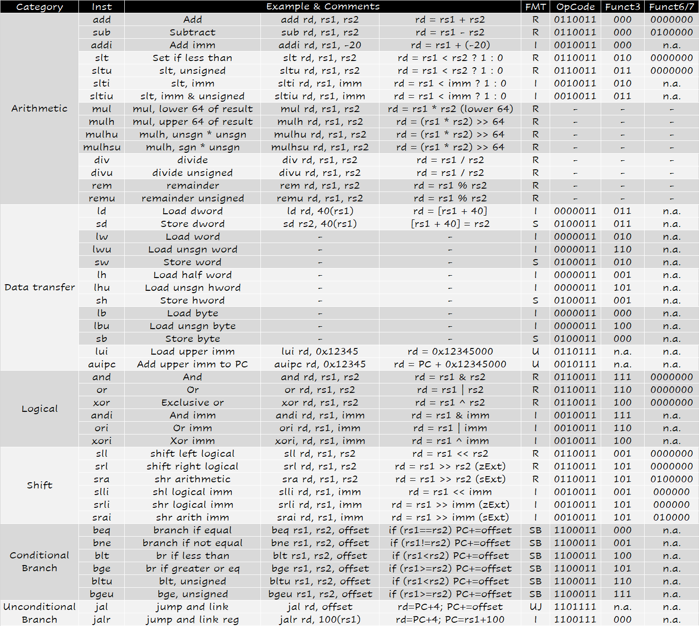
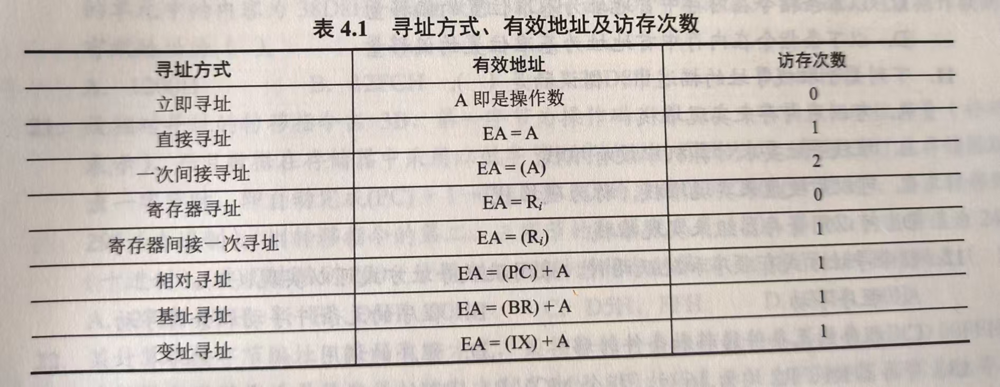
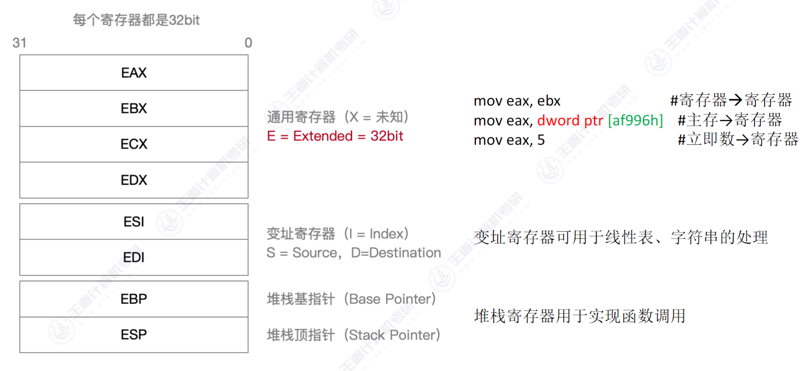
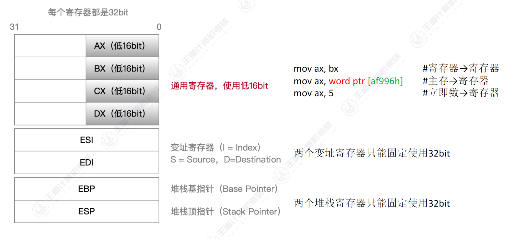
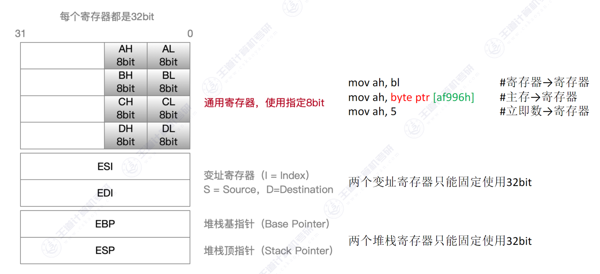
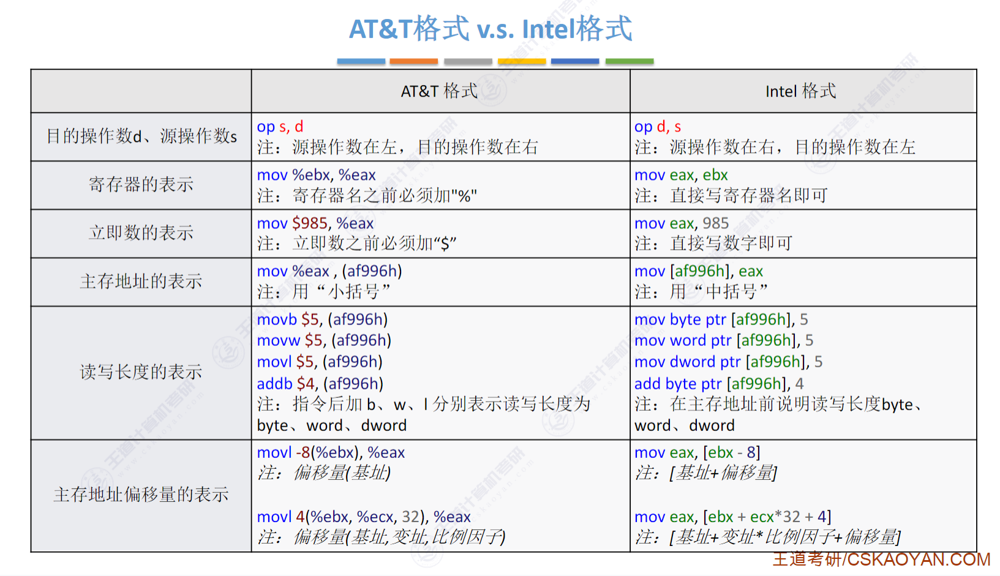
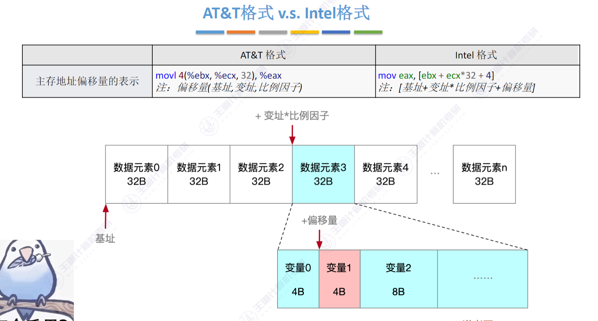
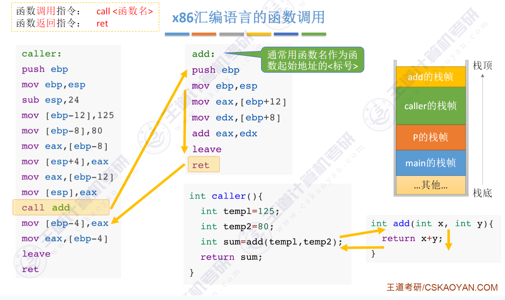
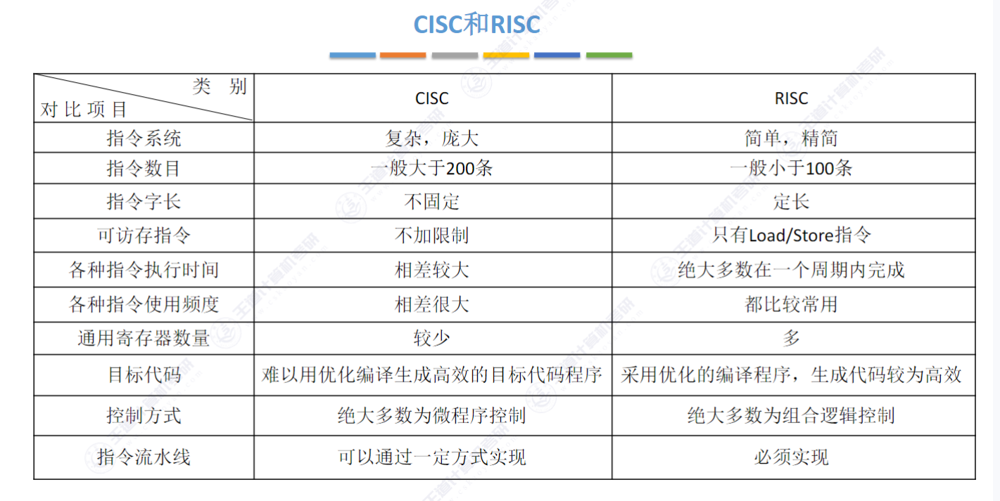

# Ch4 指令系统
# 指令系统
# ISA（王道叫它指令集体系结构）
指令系统 vs ISA
ISA 完整地定义了软件和硬件之间的接口，规定了：
- 指令格式（指令寻址方式，操作类型，操作数）
- 操作数的类型、寻址方式、大端小端存放（大端：高位放在低地址；小端：低位放在低地址）
- 程序可访问的寄存器编号、个数和位数，存储空间大小和编址方式
- 指令执行过程的控制方式（PC, condition code, …）
# 指令的基本格式
操作码 + 地址码
主存一般是按字节编址，所以指令字长通常为字节的整数倍
-
零地址指令
NOP, HLT
不需要操作数。
零地址的运算类指令仅用在堆栈计算机中（操作数直接从栈顶弹出） -
一地址指令
OP, A1
OP(A1) -> A1
加 1，减 1，取反，求补，移位等
可能有一个操作数或者两个操作数
隐含约定目的地址的双操作数指令，地址码指明一个操作数，另一个操作数来自隐含寻址
-
二地址指令
OP, A1, A2
(A1)OP(A2) -> A1 -
三地址指令
OP, A1, A2, A3
(A1)OP(A2) -> A3 -
四地址指令
OP, A1, A2, A3, A4
(A1) OP (A2) -> A3, A4 = 下一条将要执行指令的地址
# 定长操作码指令格式
n 位 opcode 最多能表示 2^n 条指令
指令字长：单字长 (PC = PC + 1)、双字长 (PC = PC + 2)…
# 扩展操作码指令格式
才去可变长度操作码，分散地放在指令字的不同位置上
要求：
- 不允许短码是长码的前缀
- 各指令的操作码不能重复

RISC-V 指令集
# 指令的操作类型
- 数据传送
- MOV: 寄存器到寄存器
- LOAD: 从内存读到寄存器
- STORE: 从寄存器写入内存
- PUSH
- POP
-
算术和逻辑运算
ADD, SUB, MUL, DIV, MOD, AND, OR, XOR, NOT, XOR, INC (加一), DEC (减一) -
移位
算术移位，逻辑移位，循环移位 -
转移
JMP, BRANCH, CALL, RET, TRAP（中断隐指令是硬件实现的，只有 TRAP 是软指令） -
I/O 操作
# 指令的寻址方式
# 指令寻址与数据寻址
- 指令寻址
- 顺序： PC = PC + 1
- 跳转： 绝对转移 (PC = 跳转地址) , 相对转移 (PC = PC + offset)
- 数据寻址
格式：操作码 寻址特征 形式地址 A
- 立即寻址 (addi, …)
- 直接寻址（A 直接表示地址）
- 寄存器寻址 (add, …)
- 寄存器间接寻址 (lw r1 offset (r2), …)
# 常见的数据寻址方式
- 隐含寻址
比如单地址的第二个操作数由 ACC 提供: Intel 8080 的ADD A指令会将寄存器 A 的内容与指定的操作数（放在 ACC 内）相加，并将结果存储回累加器中
优点是缩短指令字长；缺点是需要增加存储操作数或隐含地址的硬件 - 立即（数）寻址
比如 riscv 的addi x5, x6, #1
优点是不用访存速度快，缺点是立即数位数有限 - 直接寻址
OP #A
比如 lc3 的LD R1, LABEL1翻译成汇编是LD R1, x3100表示R1 <- MEM[x3100]
形式地址 A 就是操作数的真实地址 EA
优点是简单，缺点是寻址范围受 A 的位数限制 - 间接寻址
EA = (A)
指令中给出的地址是包含实际地址的内存位置或寄存器
比如 lc3 的LDI R1, LABEL1翻译成汇编是LDI R1, x3100表示R1 <- MEM[MEM[x3100]] - 寄存器寻址
EA = (Ri)
ADD R1, R2, R3 - 寄存器间接寻址
EA = (Ri)
比如LW R1, offset(R2) - 相对寻址
相对 PC 寻址
EA = (PC) + A
比如 branch - 基址寻址
EA = (BR) + A
面向操作系统，优点是扩大寻址范围，有利于躲到程序设计；缺点是偏移量 (A) 的位数较短 - 变址寻址
EA = (IX) + A
比如用来访问数组
偏址寻址：相对寻址、基址寻址、变址寻址
- 堆栈寻址有一个堆栈指针 SP，堆栈分为硬堆栈，软堆栈。寄存器堆栈是硬堆栈，内存是软堆栈。采用无操作数指令

# 程序的机器级代码表示
x86 汇编
# 常用汇编指令介绍
- 相关寄存器
x86 架构有 8 个 32 位的通用寄存器：EAX、EBX、ECX、EDX、ESI、EDI、EBP、ESP


 - 汇编指令格式
x86 汇编指令格式有两种：AT&T 格式和 Intel 格式
- AT&T 只能小写，Intel 大小写都行
- AT&T 第一个操作数是源操作数，第二个是目的操作数；Intel 第一个操作数是目的操作数，第二个是源操作数
- AT&T 寄存器前缀 %，立即数前缀 $；Intel 格式寄存器和立即数不需要加前缀
- 内存寻址：AT&T 格式为 (addr)，Intel 格式为 [addr]
- 处理复杂寻址方式时，AT&T 格式为 disp (base, index, scale)，表示偏移量，基址寄存器，变址寄存器，比例因子，表示的操作数为 M [R [base]+R [index]*scale + disp];
- 指定数据长度时，AT&T 用 b, w, l; Intel 用 byte ptr, word ptr, dword ptr (一个 word 是 16 位，一个 dword 是 32 位)


- 常用指令
表示任意寄存器，后面跟数字指定其位数 内存地址 后面跟数字表示几位常数
常见的指令：- 数据传送指令
- mov
- mov
, - mov
, - mov
, - mov
, - mov
,
- mov
- push (ESP 指向栈顶空的位置，push 之前 ESP = ESP - 4) 栈中元素固定为 32 位
- push <reg32
- push
- push
- pop (pop 之后 ESP = ESP + 4)
- pop
- pop
- pop
- mov
- 算术和逻辑运算
- add/sub (把两个操作数相加 / 减，结果放回目的操作数)
- add eax, 10 # eax = eax + 10
- add byte ptr [var], 10 # 10 与 var 指向的内存地址的一字节值相加，结果放回 var 指向的内存中
- inc/dec (把操作数自加 1 / 自减 1)
- dec eax # eax = eax - 1
- inc dword ptr [var] # var 指向的 32 位值自加 1，结果放回 var 指向的 32 位内存中
- imul (有符号数整数乘法，mul 是无符号数乘法) 目的操作数必须是寄存器，溢出时
OF = 1- imul
, - imul
, - imul
, , - imul
, ,
- imul
- idiv (有符号数整数除法，只有一个操作数为除数，被除数有 64 位放在
edx:eax中，操作结果商放到eax，余数放到edx)- idiv
- idiv
- idiv
- and/or/xor
- and/or/xor
, - and/or/xor
, - and/or/xor
, - and/or/xor
, - and/or/xor
,
- and/or/xor
- not (按位取反)
- not
- not
- not
- neg (取负)
- neg
- neg
- neg
- shl/shr (逻辑左移 / 右移)
- shl
, - shl
, - shr
, - shr
,
- shl
- add/sub (把两个操作数相加 / 减，结果放回目的操作数)
- 控制流
- jmp
- jmp
- jcondition
- je
- jz
- jne
- jg
- jge
- jl
- jle
- cmp/test (cmp 相当于相减，test 相当于按位与，不保存操作结果仅设置条件码用于跳转指令)
- cmp/test
, - cmp/test
, - cmp/test
, - cmp/test
,
- cmp/test
- call/ret (call 将返回地址入栈然后跳转，ret 弹出返回地址并跳转)
- call
- ret
- jmp
# 选择语句的机器级表示
1 | if(test_exp) |
翻译成
1 | if(!t) |
# 循环语句的机器级表示
- do-while
1 | do |
翻译成：
1 | loop: body_stmt; |
- while
1 | while(test_exp) |
翻译成：
1 | t = test_exp; |
- for
1 | for(init_exp; test_exp; update_exp) |
翻译成：
1 | init_exp; |
# 过程调用的机器级表示
- caller 将实参放到 callee 能访问的地方（寄存器放不下放栈里）
- caller 保存返回地址（通过 call 指令实现）
- callee 保存 caller 通用寄存器的内容，并为自己的非静态局部变量分配空间
- 执行 callee
- 恢复 caller 的寄存器内容，将返回值放到 caller 能访问的地方（寄存器、栈），释放局部变量
- callee 取出返回地址，恢复 PC（ret 实现）
EAX, ECX, EDX 是 caller saved register
通常用于传递参数、存储临时变量或返回值，所以 call 的时候内容可能会变，要先保存再调用。比如返回值一般保存在 EAX
EBX, ESI, EDI 是 callee saved register
这些寄存器的值在函数调用后应保持不变，所以由 callee 保存，ret 的时候要恢复
每个过程有自己的栈帧， EBP 保存栈帧的基址， ESP 指向栈顶位置， EBP 的值不变，当前栈帧的范围在 EBP 和 ESP 之间（详见编译原理 activated record ）

前三行的意思是新开一个栈帧，分配了 24 字节的栈帧空间。 push epb 实际上就是把 static link 压栈。详见编译原理笔记
执行 call 之后， call 会先将返回地址压栈，然后跳转到 add 的起始地址，为 add 创建栈帧。 add 的返回值存放在 EAX 中。
执行 ret 之前需要释放当前栈帧，恢复 caller 的栈帧。因此 leave 相当于 mov esp, ebp pop ebp
# CISC 和 RISC 的基本概念
复杂指令系统计算机 (CISC)：比如 x86
精简指令系统计算机 (RISC)：ARM, MIPS…
# CISC
- 指令系统复杂庞大，指令数目多
- 指令长度不固定，格式多，寻址方式多
- 可以访存的指令不受限制（比如 x86 的 add 可以直接把 reg 和 mem 相加，但是 riscv 的只能 reg 和 reg 或者 reg 和 imm）
- 各种指令使用频度相差很大
- 各种指令执行时间相差很大，大多指令需要多个时钟周期
- 控制器大多采用微程序控制，无法采用硬连线控制
- 难以用优化编译生成高效的目标代码程序
# RISC
- 选取使用频率最高的一些简单指令，复杂指令的功能由简单指令的组合来实现
- 指令长度固定，指令格式种类少，寻址方式种类少
- 只有 LOAD/STORE 访存，其余指令的操作只能访问寄存器 /imm
- CPU 中通用寄存器数量相当多
- 采用流水线技术，大部分指令在一个时钟周期内完成
- 硬布线控制为主，不用或少用微程序控制
- 重视编译优化
CISC 兼容性好，大多 RISC 不能和老机器兼容，但具有更强的实用性。CISC 可以提供更多的功能
# CISC 和 RISC 的比较
和 CISC 相比，RISC 的优点：
- RISC 更能充分利用 VLSI（超大规模集成电路）芯片的面积（减少了控制逻辑）
- RISC 更能提高运算速度
- RISC 便于设计，可以降低成本，提高可靠性
- 有利于编译优化
